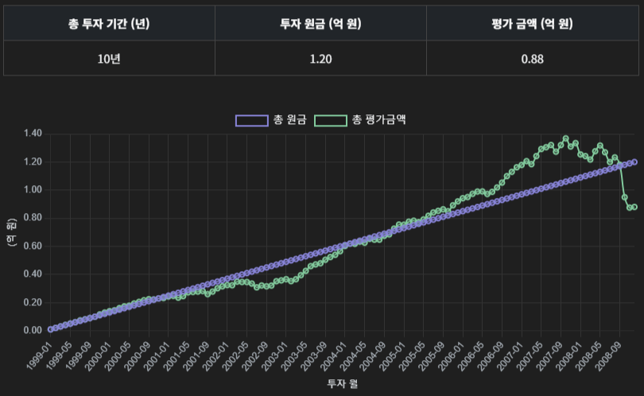
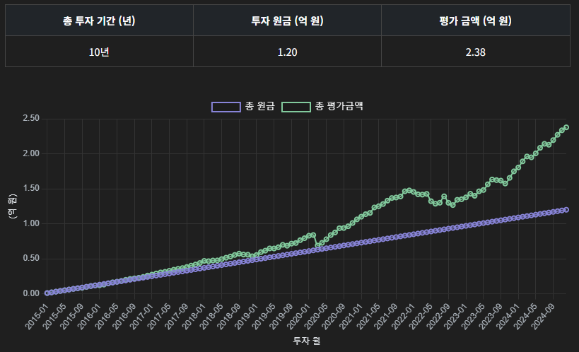
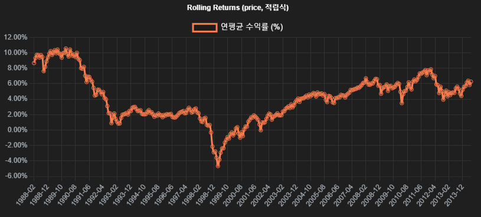
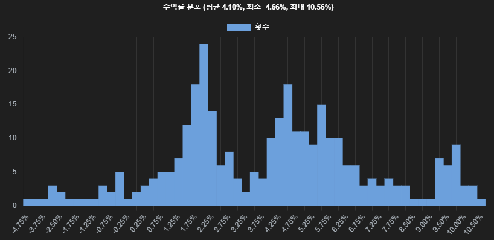

적립식 투자 리포트: 시점 선택이 수익률에 미치는 실증 분석
본 보고서는 S&P500 지수를 기반으로 동일한 금액을 일정 주기로 적립 투자했을 경우, 투자 시작 시점에 따라 수익률이 어떻게 달라지는지를 실증적으로 분석합니다. 장기 평균 수익률에 대한 맹신보다는, 실현 가능한 성과의 분포와 리스크 요인을 균형 있게 이해하는 데 초점을 맞춥니다.
1. 시점에 따른 수익률 격차: 두 사례 비교
아래는 동일한 조건(월 100만 원, 총 10년간 적립 투자) 하에서 시점만 달리한 두 구간의 실현 수익 결과입니다.
1999~2008: 거품 붕괴와 글로벌 금융위기로 인해 총 1.2억 원의 투자금은 0.88억 원으로 감소, 누적 손실 발생. 시장 타이밍에 대한 민감도가 드러납니다.
2015~2024: 저금리 환경, 기술 성장주 중심의 상승세에 힘입어 동일 투자금이 2.38억 원으로 성장. 2배 이상의 자본 증가가 나타납니다.
2. 장기 평균 수익률과 현실의 괴리
아래의 그래프는 1927~2025년 동안 S&P500 지수의 로그 회귀 기반 장기 성장 추세를 나타냅니다.

전체 기간의 연평균 수익률(CAGR)은 약 6.89% 수준으로 계산됩니다. 이는 이론적 기대 수익률로 자주 인용되지만, 실제 투자자가 이 수익률을 실현할 확률은 시점에 따라 크게 달라집니다. 따라서 장기 추세선은 하나의 벤치마크일 뿐, 실제 투자 성과는 수익률 분산(Variance)에 의해 좌우됨을 유념해야 합니다.
3. Rolling CAGR 분석: 시계열 상 수익률 분포
모든 10년 구간에 대한 연평균 수익률(CAGR)을 Rolling 방식으로 산출한 결과입니다.
CAGR은 최저 -4.66% ~ 최고 10.56%까지 분포하며, 같은 전략이라도 수익률 편차가 큽니다. 이는 장기 투자 시에도 시점 선택이 리스크 요인으로 작용함을 보여줍니다.
히스토그램 기준 평균은 4.10%이며, 수익률 분포의 좌우 비대칭성과 fat-tail 현상이 관찰됩니다. 장기 투자라 하더라도 실현 수익률이 평균 이하로 수렴하거나 손실 구간에 머무를 가능성이 결코 무시할 수준이 아님을 보여줍니다.
4. 결론 및 시사점
- 평균 수익률(CAGR)은 기대값일 뿐, 실현 수익은 분포를 따른다.
- 적립식 투자 또한 시점 리스크에 노출된다. 분산 효과에도 불구하고 손실 발생 가능성이 존재.
- Rolling 분석은 과거의 변동성 구조와 수익률 분포의 현실을 드러낸다.
- 전략 수립 시 백테스트 기반의 확률적 접근이 중요하며, 단일 기대수익률에 기반한 판단은 피해야 함.